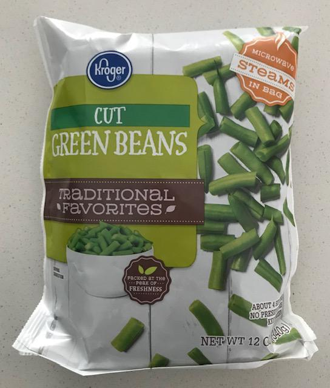
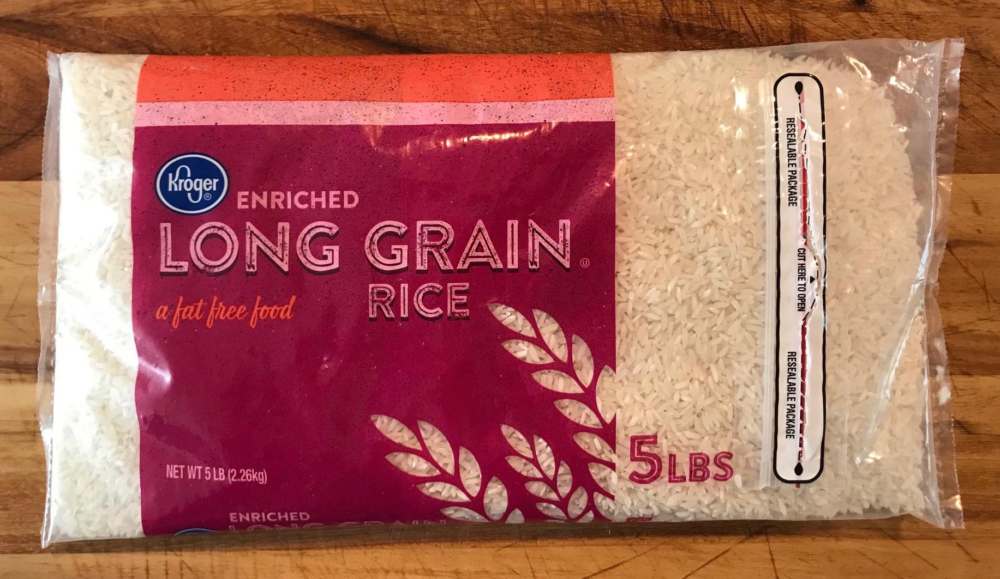
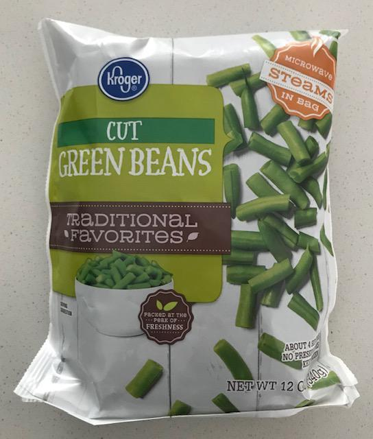
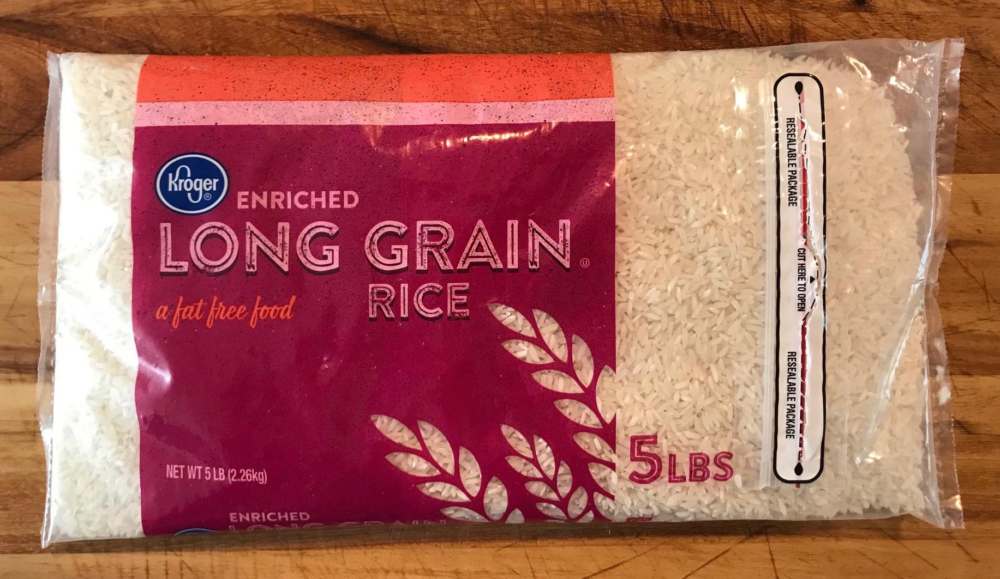

Teriyaki Chicken Bowls
Ingredients
- chicken, 1 lb
- sweet or bell peppers, 1 cup
- chipotle peppers, 2 - 3
- white onion, 1 whole
- frozen green beans, 6 oz
- rice (e.g. long grain white), 2 cups
- garlic, 4 cloves (or garlic powder)
- lemon juice, 3 drops
- vegetable oil, 3 tbsp
- chicken broth, enough to almost cover chicken
- teriyaki sauce, around 1 cup
Kitchen Gear
- Instant Pot or pressure cooker
- cast iron skillet
- rice cooker
Commentary
- Any cut of chicken may be used that can be chopped or shredded
- Chop the onion and sweet/bell peppers and set aside in a bowl before starting.
- Peel the garlic cloves before starting but do not mince until it's ready to be added to the rice cooker.
- The chicken will generally take the longest to cook so start cooking that first.
- Start the rice after the chicken is cooking so it's ready when needed.
Cook Chicken
- In Instant Pot or pressure cooker, add
- 1 lb of chicken
- chicken broth until chicken is nearly covered
- teriyaki sauce to taste, around 1 cup
- Mix ingredients until distributed evenly
- Cook 25 minutes under pressure
Cook Rice
- In a rice cooker, add
- 2 cups rice (I usually use long grain white rice)
- water to preferred moisture, around 2.25 cups
- 4 cloves minced garlic (or 2 tbsp garlic powder)
- 3 drops of lemon juice
- Stir to distribute ingredients and start the rice cooking
Cook Vegetables
- Add 4 tbsp of vegetable oil to a cast iron skillet and bring to medium/low heat
- Once the pan is hot, add
- 1 cup roughly chopped peppers
- 1 roughly chopped white onion
- Stir occasionally until the onion is wilted then add
- 2 - 3 finely minced chipotle peppers
- 6 oz frozen cut green beans
- Cook until green beans are done to taste and reduce to low heat until chicken is done cooking
Combine and Serve
- When the chicken is done, chop and mix into the cast iron skillet
- Add skillet mixture over a bowl of rice
- Season with additional teriyaki or soy sauce to taste
- Enjoy!

 


